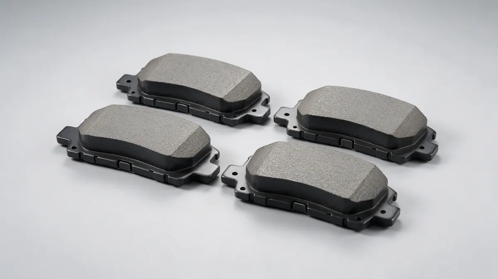

Frenoteca · Medellín
Cambio de pastillas de freno en Medellín
Cambiamos tus pastillas de freno el mismo día y sin cita. Instalación por especialistas con Brembo, Bosch, ATE e Incolbestos. Revisión de frenos sin costo.
- 4,6 · 360 opiniones en Google
- Listo el mismo día
- Sin cita
- +40 años

¿Cuándo revisarlas?
- Chillido o ruido metálico al frenar
- Mayor distancia para detener el vehículo
- Testigo de frenos encendido en el tablero
Cambio de pastillas de freno en Medellín: revisamos el desgaste, te confirmamos la referencia exacta para tu carro y hacemos la instalación de las pastillas en nuestro taller de la Carrera 50 # 39-87. Al terminar probamos el frenado contigo, para que salgas seguro.
Paso a paso
Así es el cambio de pastillas
- Revisamos tus frenosMedimos el desgaste de pastillas y discos, sin costo.
- Te cotizamos según tu carroReferencia exacta para tu marca, modelo y año.
- Instalamos las pastillasInstalación de pastillas de freno por especialistas.
- Probamos y te entregamosProbamos el frenado y te entregamos el carro.
Opiniones reales
Lo que dicen nuestros clientes
«El servicio es excelente, te atienden rápidamente y realizan el mantenimiento rápido.»
«Muy buen servicio, el joven Alejandro me atendió con mucha disposición y los frenos quedaron excelentes.»
«El mejor lugar para cambiar frenos de todo Medellín.»
Cambio de pastillas de freno para tu carro
Las pastillas de freno son la pieza que más trabaja en el sistema de frenos: cada vez que pisas el pedal, se aprietan contra el disco para detener el carro. Por eso también son la que más rápido se desgasta. En Frenoteca hacemos el cambio y la instalación de pastillas de freno con el repuesto y el taller en un solo lugar, con marcas como Brembo, Bosch, Incolbestos y ATE, en referencias originales y homologadas.
Tipos de pastillas de freno
- Cerámicas: frenan suave, hacen poco ruido y sueltan poco polvo en los rines. Suelen durar más y son comunes en carros de uso diario.
- Semimetálicas: llevan fibras metálicas que soportan mejor el calor. Son buena opción para camionetas, carros pesados y manejo exigente, aunque pueden ser más ruidosas y gastar un poco más el disco.
- Orgánicas: hechas de fibras y resinas, son silenciosas y suaves con el disco, pero se desgastan más rápido y aguantan menos el calor.
| Tipo | Ruido y polvo | Calor y peso | Duración | Ideal para |
|---|---|---|---|---|
| Cerámica | Poco | Bien | Alta | Uso diario en ciudad |
| Semimetálica | Más ruido | Muy bien | Media | Camionetas, carga y lomas |
| Orgánica | Poco | Menos | Baja | Manejo suave |
¿Cómo elegir las pastillas correctas?
La pastilla correcta depende de tu carro y de cómo lo usas. Esto es lo que revisamos contigo:
- La referencia exacta para la marca, el modelo y el año de tu vehículo.
- Cómo y por dónde manejas: ciudad, carretera o las lomas de Medellín.
- El peso: camionetas, carros con carga o carros blindados.
- Si prefieres el repuesto original o uno homologado de marcas premium.
Señales de desgaste
El chillido al frenar suele ser el primer aviso de que la pastilla se está acabando. Si el ruido ya es metálico, es probable que esté rayando el disco y que también toque cambiarlo. Otras señales son la vibración en el pedal, que el carro se vaya hacia un lado o que necesite más distancia para detenerse.
¿Cada cuánto se cambian las pastillas de freno?
No hay un kilometraje fijo: como referencia general, muchas duran entre 30.000 y 50.000 km, y en Medellín las lomas y el tráfico de pare y arranque las gastan antes. Lo seguro es revisarlas en cada mantenimiento.
¿Cuántos kilómetros duran? Lee nuestra guía ¿Cada cuánto se cambian las pastillas de freno?
¿Cuánto se demora el cambio de pastillas?
En la mayoría de carros el cambio de pastillas queda listo el mismo día. No necesitas cita: te atendemos en orden de llegada.
¿Cada cuánto se cambian las pastillas?
Como referencia general, muchas duran entre 30.000 y 50.000 km, pero depende del carro, del tipo de pastilla y de cómo y por dónde manejas. En nuestro taller revisamos su desgaste sin costo y te indicamos el momento adecuado para el cambio.
¿Qué pastillas son mejores: cerámicas, semimetálicas u orgánicas?
Depende del uso. Las cerámicas son silenciosas y duraderas para el día a día; las semimetálicas aguantan mejor el calor y el peso; las orgánicas son suaves, pero se gastan más rápido. Te asesoramos según tu carro y tu forma de manejar.
¿Qué marcas de pastillas de freno manejan?
Brembo, Bosch, Incolbestos, ATE e importadas, en referencias originales y homologadas para todo tipo de vehículo.
¿Venden las pastillas o también las instalan?
Las dos cosas. Tenemos el repuesto y el taller que lo instala en un solo lugar, en la Carrera 50 # 39-87, Medellín.
¿Necesito cita para el cambio de pastillas?
No. Atendemos en orden de llegada. Si quieres confirmar la referencia para tu carro antes de venir, escríbenos por WhatsApp con marca, modelo y año.
Cotizaciones
Cotiza y consulta disponibilidad
Responde unas preguntas rápidas y te enviamos todo por WhatsApp. Atendemos en orden de llegada.
Ubicación
Cómo llegar a Frenoteca
Lunes a viernes 8:00 a. m. – 5:00 p. m.
Carrera 50 # 39-87
Medellín, Antioquia
- Lunes a viernes
- 8:00 a. m. – 5:00 p. m.
- Sábado
- 8:00 a. m. – 1:00 p. m.
- Domingo
- Cerrado